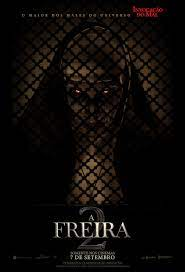

o filme começa quando e mostrado duas freiras uma mais velha e a outra mais nova em frente a uma porta quando uma e puchada para o escuro e quando ela volta ela emtrega uma corda para a freira mais nova emtão a freira mais nova começa a correr entra em um quarto amarra a corda no pescoso e se joga
no segundo ato nos mostra um fazendeiro indo entregar suprimentos para as freira quando ele se depara com a freira inforcada logo na entrada a cena corta para uma catedral ende chamarão um pastor e uma aprendiz de freira para investigar o que aconteceu na igreja das freiras
no terceiro ato eles com ajuda do campones acabam chegando na igreja das freira e eles resolvem dormir aquela noite na igreja emtão todo mundo se separa e acaba acontecendo varias manifestações paranormais
os eventos paranormais começão com o padre ende ele ve uma criança fora do quarto e ele vai atraz mas acaba parando em um cemiterio e quando ela para em frente a uma cova aberta ele e empurrado e emterrado no caixão e o tumulo mas e salvo pelo campones andes do campones salvar o padre ele tinha sido atacado pela a freira em forma de zumbi mas acaba vencendo ela com um pedaço de madeira agora como isso faz sentido não sei a cena corta para a aprendiz de freira que estava rezando quando ela começa escutar varias freiras rezando atraz dela e ela começa ver varios bancos sendo jogados na parede dai ela começa a levar chicotada nas costas ouve as freira gritando ate que o padre e o campones chegam e quando ela abre os olhos não tinham nada
ato final quando eles finalmente percebem que aquela igreja não estava normal eles resilvem vasculhar a igreja quando acham uma porta onde estava escrito deus termina aqui então eles acharão um diario onde contam o que aconteceu no local a historia basicamente e que eles invocarão um o capeta naquele lugar e depois virão que fizeram merda usaram uma ampulheta que tinha o sangue de jesus para prender o demonio la então o grupinho vai e emtra na sala onde o demonio foi selado tem uma última batalha com o demonio freira e venc